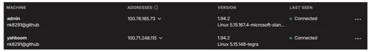

Setup¶
CUDA driver update¶
Fetch latest upgrades: sudo apt update && sudo apt upgrade
Then update the drivers: sudo ubuntu-drivers install
Reboot jetson: sudo reboot
SSH¶
Jump host¶
We can make the server our jumphost to jetson and save the configurations in our local ~/.ssh/config. This will allow us to directly SSH into jetson:
Host <server_name>
Hostname <server IP>
User <server login username>
IdentityFile ~/.ssh/id_rsa
Host jetson
HostName <jetson IP>
User <jetson login username>
IdentityFile ~/.ssh/id_rsa
ProxyJump <server_name>
id_rsa as your public keys. Since you copied your public keys in authorized_keys on server too, jetson will authenticate you from those keys.
Save the server public keys to jetson ~/.ssh/authorized_keys, run the following command on the server:
Network¶
Requesting IP¶
On jetson, request a new IP from the DHCP server after a fresh reboot:
Check Tailscale, whether jetson(yahboom user) has been given a new IP:

Autoconnecting to ethernet on device restart¶
Check if NetworkManager is running: systemctl status NetworkManager
If it is not running:
If it is already running, find the ethernet connection name: nmcli connection show
The name will likely be eno1, then:
sudo nmcli connection modify "ethernet_name" connection.autoconnect yes
sudo nmcli connection modify "ethernet_name" ipv4.method auto
Setting DNS¶
In case of jetson does not reach a DNS server:
- Sudo open
/etc/systemd/resolved.confin your preferred text editor. - Under the
[Resolve]section, uncomment and modify the lines:
- Restart the service: sudo systemctl restart systemd-resolved
Once you've made your changes, test your DNS: resolvectl status
Tools¶
jtop¶
Intall using pip: